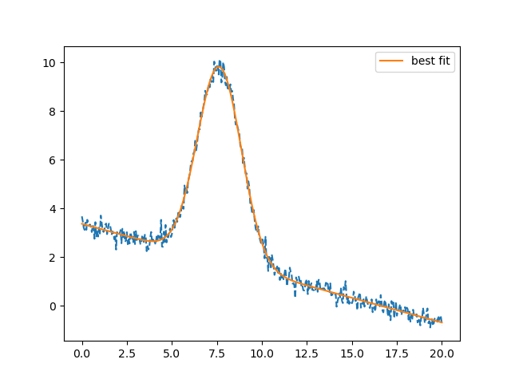

Note
Click here to download the full example code
doc_model_with_iter_callback.py¶
Out:
ITER -1 ['3.00000', '6.00000', '2.00000', '0.00000', '0.00000', '4.70964', '0.59841']
ITER 0 ['3.00000', '6.00000', '2.00000', '0.00000', '0.00000', '4.70964', '0.59841']
ITER 1 ['3.00000', '6.00000', '2.00000', '0.00000', '0.00000', '4.70964', '0.59841']
ITER 2 ['3.00000', '6.00000', '2.00000', '0.00000', '0.00000', '4.70964', '0.59841']
ITER 3 ['3.00000', '6.00000', '2.00000', '0.00000', '0.00000', '4.70964', '0.59841']
ITER 4 ['3.00000', '6.00000', '2.00000', '0.00000', '0.00000', '4.70964', '0.59841']
ITER 5 ['3.00000', '6.00000', '2.00000', '0.00000', '0.00000', '4.70964', '0.59841']
ITER 6 ['3.00000', '6.00000', '2.00000', '0.00000', '0.00000', '4.70964', '0.59841']
ITER 7 ['27.41810', '24.48443', '6.86407', '-0.20617', '3.22509', '16.16365', '1.59355']
ITER 8 ['27.41810', '24.48443', '6.86407', '-0.20617', '3.22509', '16.16365', '1.59355']
ITER 9 ['27.41810', '24.48443', '6.86407', '-0.20617', '3.22509', '16.16365', '1.59355']
ITER 10 ['27.41810', '24.48443', '6.86407', '-0.20617', '3.22509', '16.16365', '1.59355']
ITER 11 ['27.41810', '24.48443', '6.86407', '-0.20617', '3.22509', '16.16365', '1.59355']
ITER 12 ['27.41810', '24.48443', '6.86407', '-0.20617', '3.22509', '16.16365', '1.59355']
ITER 13 ['6.96502', '104.53101', '17.24485', '0.39526', '3.20217', '40.60853', '0.16113']
ITER 14 ['25.52956', '29.38325', '12.08679', '-0.19932', '3.90951', '28.46221', '0.84264']
ITER 15 ['25.52956', '29.38325', '12.08679', '-0.19932', '3.90951', '28.46221', '0.84264']
ITER 16 ['25.52956', '29.38325', '12.08679', '-0.19932', '3.90951', '28.46221', '0.84264']
ITER 17 ['25.52956', '29.38325', '12.08679', '-0.19932', '3.90951', '28.46221', '0.84264']
ITER 18 ['25.52956', '29.38325', '12.08679', '-0.19932', '3.90951', '28.46221', '0.84264']
ITER 19 ['25.52956', '29.38325', '12.08679', '-0.19932', '3.90951', '28.46221', '0.84264']
ITER 20 ['20.91135', '29.80809', '28.98798', '-0.25803', '4.54769', '68.26148', '0.28779']
ITER 21 ['20.91135', '29.80809', '28.98798', '-0.25803', '4.54769', '68.26148', '0.28779']
ITER 22 ['20.91135', '29.80809', '28.98798', '-0.25803', '4.54769', '68.26148', '0.28779']
ITER 23 ['20.91135', '29.80809', '28.98798', '-0.25803', '4.54769', '68.26148', '0.28779']
ITER 24 ['20.91135', '29.80809', '28.98798', '-0.25803', '4.54769', '68.26148', '0.28779']
ITER 25 ['20.91135', '29.80809', '28.98798', '-0.25803', '4.54769', '68.26148', '0.28779']
ITER 26 ['29.69940', '8.72214', '28.44165', '-0.29097', '5.00931', '66.97496', '0.41658']
ITER 27 ['29.69940', '8.72214', '28.44165', '-0.29097', '5.00931', '66.97496', '0.41658']
ITER 28 ['29.69940', '8.72214', '28.44165', '-0.29097', '5.00931', '66.97496', '0.41658']
ITER 29 ['29.69940', '8.72214', '28.44165', '-0.29097', '5.00931', '66.97497', '0.41658']
ITER 30 ['29.69940', '8.72214', '28.44165', '-0.29097', '5.00931', '66.97496', '0.41658']
ITER 31 ['29.69940', '8.72214', '28.44165', '-0.29097', '5.00931', '66.97496', '0.41658']
ITER 32 ['46.89731', '8.78094', '7.31717', '-0.28389', '4.21022', '17.23062', '2.55691']
ITER 33 ['46.89731', '8.78094', '7.31717', '-0.28389', '4.21022', '17.23062', '2.55691']
ITER 34 ['46.89731', '8.78094', '7.31717', '-0.28389', '4.21022', '17.23062', '2.55691']
ITER 35 ['46.89731', '8.78094', '7.31717', '-0.28389', '4.21022', '17.23062', '2.55691']
ITER 36 ['46.89731', '8.78094', '7.31717', '-0.28389', '4.21022', '17.23062', '2.55691']
ITER 37 ['46.89731', '8.78094', '7.31717', '-0.28389', '4.21022', '17.23062', '2.55691']
ITER 38 ['-4.07145', '-5.77499', '1.83369', '0.19893', '-0.40787', '4.31801', '-0.88579']
ITER 39 ['42.58155', '9.47182', '3.59358', '-0.28186', '3.21577', '8.46223', '4.72721']
ITER 40 ['42.58156', '9.47182', '3.59358', '-0.28186', '3.21577', '8.46223', '4.72721']
ITER 41 ['42.58155', '9.47182', '3.59358', '-0.28186', '3.21577', '8.46223', '4.72721']
ITER 42 ['42.58155', '9.47182', '3.59358', '-0.28186', '3.21577', '8.46223', '4.72721']
ITER 43 ['42.58155', '9.47182', '3.59358', '-0.28186', '3.21577', '8.46223', '4.72721']
ITER 44 ['42.58155', '9.47182', '3.59358', '-0.28186', '3.21577', '8.46223', '4.72721']
ITER 45 ['30.02256', '6.80238', '2.99512', '-0.12854', '2.34694', '7.05298', '3.99892']
ITER 46 ['30.02256', '6.80238', '2.99512', '-0.12854', '2.34694', '7.05298', '3.99892']
ITER 47 ['30.02256', '6.80238', '2.99512', '-0.12854', '2.34694', '7.05298', '3.99892']
ITER 48 ['30.02256', '6.80238', '2.99512', '-0.12854', '2.34694', '7.05298', '3.99892']
ITER 49 ['30.02256', '6.80238', '2.99512', '-0.12854', '2.34694', '7.05298', '3.99892']
ITER 50 ['30.02256', '6.80238', '2.99512', '-0.12854', '2.34694', '7.05298', '3.99892']
ITER 51 ['17.69321', '8.46641', '1.01644', '-0.23044', '3.83660', '2.39353', '6.94443']
ITER 52 ['17.69321', '8.46641', '1.01644', '-0.23044', '3.83660', '2.39353', '6.94443']
ITER 53 ['17.69321', '8.46641', '1.01644', '-0.23044', '3.83660', '2.39353', '6.94443']
ITER 54 ['17.69321', '8.46641', '1.01644', '-0.23044', '3.83660', '2.39353', '6.94443']
ITER 55 ['17.69321', '8.46641', '1.01644', '-0.23044', '3.83660', '2.39353', '6.94443']
ITER 56 ['17.69321', '8.46641', '1.01644', '-0.23044', '3.83660', '2.39353', '6.94443']
ITER 57 ['22.61242', '7.75144', '1.45121', '-0.21631', '3.56574', '3.41734', '6.21622']
ITER 58 ['22.61242', '7.75144', '1.45121', '-0.21631', '3.56574', '3.41734', '6.21622']
ITER 59 ['22.61242', '7.75144', '1.45121', '-0.21631', '3.56574', '3.41734', '6.21622']
ITER 60 ['22.61242', '7.75144', '1.45121', '-0.21631', '3.56574', '3.41734', '6.21622']
ITER 61 ['22.61242', '7.75144', '1.45121', '-0.21631', '3.56574', '3.41734', '6.21622']
ITER 62 ['22.61242', '7.75144', '1.45121', '-0.21631', '3.56574', '3.41734', '6.21622']
ITER 63 ['24.13968', '7.62178', '1.18267', '-0.20159', '3.34242', '2.78496', '8.14291']
ITER 64 ['24.13968', '7.62178', '1.18267', '-0.20159', '3.34242', '2.78496', '8.14291']
ITER 65 ['24.13968', '7.62178', '1.18267', '-0.20159', '3.34242', '2.78496', '8.14291']
ITER 66 ['24.13968', '7.62178', '1.18267', '-0.20159', '3.34242', '2.78496', '8.14291']
ITER 67 ['24.13968', '7.62178', '1.18267', '-0.20159', '3.34242', '2.78496', '8.14291']
ITER 68 ['24.13968', '7.62178', '1.18267', '-0.20159', '3.34242', '2.78496', '8.14291']
ITER 69 ['24.40279', '7.65357', '1.22778', '-0.20151', '3.32846', '2.89119', '7.92922']
ITER 70 ['24.40279', '7.65357', '1.22778', '-0.20151', '3.32846', '2.89119', '7.92922']
ITER 71 ['24.40279', '7.65357', '1.22778', '-0.20151', '3.32846', '2.89119', '7.92922']
ITER 72 ['24.40279', '7.65357', '1.22778', '-0.20151', '3.32846', '2.89119', '7.92922']
ITER 73 ['24.40279', '7.65357', '1.22778', '-0.20151', '3.32846', '2.89119', '7.92922']
ITER 74 ['24.40279', '7.65357', '1.22778', '-0.20151', '3.32846', '2.89119', '7.92922']
ITER 75 ['24.43755', '7.65514', '1.22977', '-0.20146', '3.32621', '2.89589', '7.92763']
ITER 76 ['24.43755', '7.65514', '1.22977', '-0.20146', '3.32621', '2.89589', '7.92763']
ITER 77 ['24.43755', '7.65514', '1.22977', '-0.20146', '3.32621', '2.89589', '7.92763']
ITER 78 ['24.43755', '7.65514', '1.22977', '-0.20146', '3.32621', '2.89589', '7.92763']
ITER 79 ['24.43755', '7.65514', '1.22977', '-0.20146', '3.32621', '2.89589', '7.92763']
ITER 80 ['24.43755', '7.65514', '1.22977', '-0.20146', '3.32621', '2.89589', '7.92763']
ITER 81 ['24.43823', '7.65514', '1.22982', '-0.20146', '3.32615', '2.89600', '7.92754']
ITER 82 ['24.43823', '7.65514', '1.22982', '-0.20146', '3.32615', '2.89600', '7.92754']
Nfev = 81
[[Model]]
(Model(gaussian, prefix='peak_') + Model(linear, prefix='bkg_'))
[[Fit Statistics]]
# fitting method = leastsq
# function evals = 81
# data points = 401
# variables = 5
chi-square = 20.7309419
reduced chi-square = 0.05235086
Akaike info crit = -1177.89596
Bayesian info crit = -1157.92615
[[Variables]]
peak_amplitude: 24.4382287 +/- 0.16625393 (0.68%) (init = 3)
peak_center: 7.65513988 +/- 0.00768465 (0.10%) (init = 6)
peak_sigma: 1.22981974 +/- 0.00834506 (0.68%) (init = 2)
bkg_slope: -0.20145591 +/- 0.00207980 (1.03%) (init = 0)
bkg_intercept: 3.32614932 +/- 0.02701936 (0.81%) (init = 0)
peak_fwhm: 2.89600412 +/- 0.01965112 (0.68%) == '2.3548200*peak_sigma'
peak_height: 7.92753837 +/- 0.04386563 (0.55%) == '0.3989423*peak_amplitude/max(2.220446049250313e-16, peak_sigma)'
[[Correlations]] (unreported correlations are < 0.100)
C(bkg_slope, bkg_intercept) = -0.857
C(peak_amplitude, peak_sigma) = 0.668
C(peak_amplitude, bkg_intercept) = -0.526
C(peak_sigma, bkg_intercept) = -0.352
C(peak_amplitude, bkg_slope) = 0.285
C(peak_sigma, bkg_slope) = 0.190
C(peak_center, bkg_slope) = -0.146
C(peak_center, bkg_intercept) = 0.125
##
import warnings
warnings.filterwarnings("ignore")
##
# <examples/doc_with_itercb.py>
import matplotlib.pyplot as plt
from numpy import linspace, random
from lmfit.lineshapes import gaussian
from lmfit.models import GaussianModel, LinearModel
def per_iteration(pars, iter, resid, *args, **kws):
print(" ITER ", iter, ["%.5f" % p for p in pars.values()])
x = linspace(0., 20, 401)
y = gaussian(x, amplitude=24.56, center=7.6543, sigma=1.23)
y = y - .20*x + 3.333 + random.normal(scale=0.23, size=x.size)
mod = GaussianModel(prefix='peak_') + LinearModel(prefix='bkg_')
pars = mod.make_params()
pars['peak_amplitude'].value = 3.0
pars['peak_center'].value = 6.0
pars['peak_sigma'].value = 2.0
pars['bkg_intercept'].value = 0.0
pars['bkg_slope'].value = 0.0
out = mod.fit(y, pars, x=x, iter_cb=per_iteration)
plt.plot(x, y, 'b--')
print('Nfev = ', out.nfev)
print(out.fit_report())
plt.plot(x, out.best_fit, 'k-', label='best fit')
plt.legend(loc='best')
plt.show()
# <end examples/doc_with_itercb.py>
Total running time of the script: ( 0 minutes 0.135 seconds)